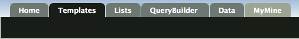
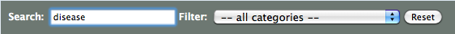
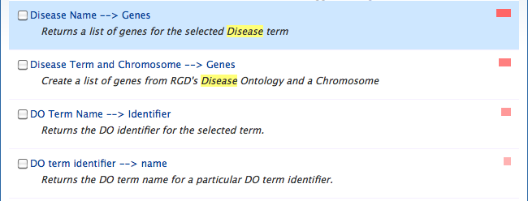

RatMine includes a library of template queries - predefined queries designed to perform a particular task. Each one has a description and a form to fill in. For example, there are templates to find GO annotation for a gene, to retrieve genes for a specific disease, or find genes that reside within a given QTL.
You can find all RatMine templates on the templates page, accessible via the toolbar on any page. Here you can search the titles and descriptions of all templates.
We can add templates to this page at any time - it only takes a few minutes - so if you have a suggestion, let us know!
You can also find templates per data type on each data category page (accessible via the icons on the home page).
On the templates page, search templates for 'disease':
and select the template 'Disease Name --> Genes':
